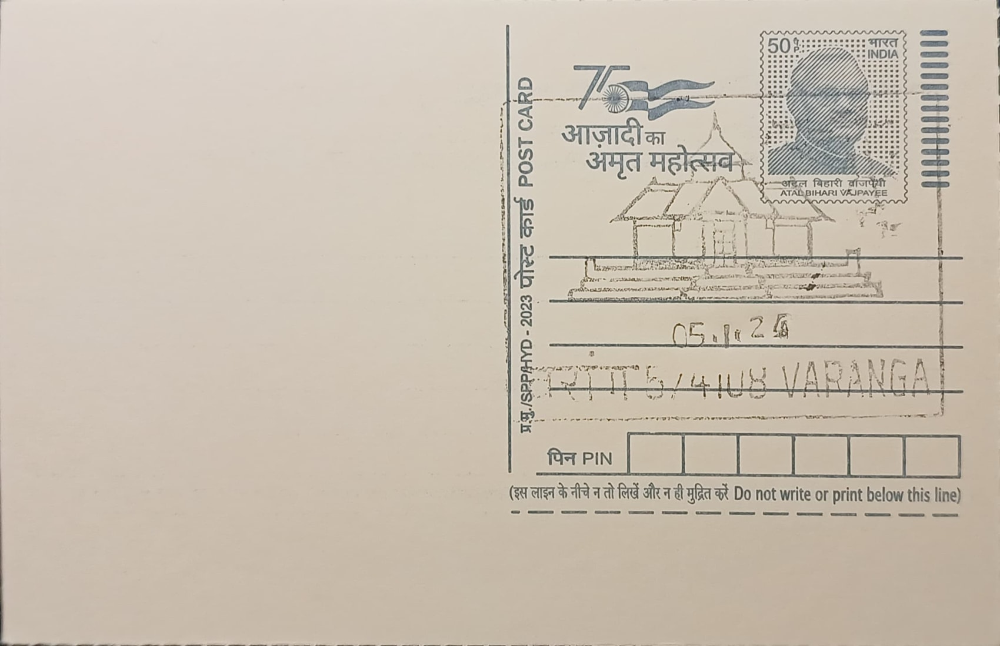

Kere Basadi
ಕೆರೆ ಬಸದಿ


The name Kere Basadi translates literally from Kannada as "lake temple," a description that is not figurative but architecturally exact: the shrine sits on an island within a reservoir in the village of Varanga, Hebri taluk, Udupi district, and is reachable today only by a short boat crossing of roughly a hundred metres across the tank. Also known as Chaturmukha Basadi for its four-faced sanctum design, the temple is formally identified in inscriptional and local tradition as a Parshwanatha Basadi, with its mulanayaka (principal deity) being Parshvanatha, the twenty-third Tirthankara of the Jain faith, flanked by images of three other Tirthankaras sharing the same consecrated pedestal.
Kere Basadi belongs to the broader cluster of Jain basadis that made Varanga and the surrounding Tulu Nadu coastal belt one of coastal Karnataka's notable centres of Jain devotion between roughly the eighth and sixteenth centuries. The temple is a Chaturmukha (four-faced) structure, a plan in which the sanctum opens symmetrically in all four cardinal directions so that each of the four enshrined Tirthankaras, Parshvanatha, Neminatha, Anantanatha and Shantinatha, faces outward independently; this layout is itself one of the distinguishing features that separates Kere Basadi from the more conventional single-facing basadis nearby, and the temple additionally houses an image of the goddess Padmavati, Parshvanatha's yakshi protector.
Local tradition and surviving records place the temple's origins at roughly eight to nine centuries old, making it one of the older shrines in the Varanga complex alongside the larger Neminatha Basadi, estimated at around 1,200 years old, and the Chandranatha or Matada Basadi, a monastic establishment of comparable antiquity. An inscription preserved at the neighbouring Neminatha Basadi, dated to 1424 CE, records a visit and land grant by King Deva Raya II of the Vijayanagara empire in support of the Varanga matha, evidence of the sustained royal and feudatory patronage that sustained Jain institutions in the region even as Vaishnavite devotional traditions centred on nearby Udupi grew more dominant from the thirteenth century onward.
The temple's setting within a reservoir of roughly fourteen acres is its most distinctive and photographed feature, giving it a reputation among visitors and pilgrims as one of the more unusual Jain shrine sites on India's western coast; access by boat, rather than causeway or bridge, has remained the customary mode of approach, reinforcing the ritual association between the tank's water and the sanctity of the enshrined Tirthankaras. The surrounding village of Varanga, set in hilly, forested terrain roughly twenty-four kilometres from Karkala town, has grown around this cluster of basadis, with the three principal shrines, Neminatha Basadi, Matada Basadi and Kere Basadi, forming a connected pilgrimage circuit still maintained by the local Jain community.
Administration of the Varanga basadis today rests with the local Jain matha and community trusts that oversee worship, upkeep of the tank, and the boat access used by visitors and devotees alike, with the site drawing both religious pilgrims and heritage tourists interested in coastal Karnataka's Jain past. The Varanga post office, through which the surrounding settlements including Kere Basadi's locality are served under PIN 574108, places this shrine within the everyday postal geography of Udupi district even as the temple itself remains a functioning place of Jain worship rather than a purely historical monument, its island sanctum opened for daily rites much as it has been for centuries.
| Date of Introduction | January 5, 2024 |
|---|---|
| Address | Branch Postmaster, |
| Varanga BO, | |
| Udupi (dt.), Karnataka - 574108. |